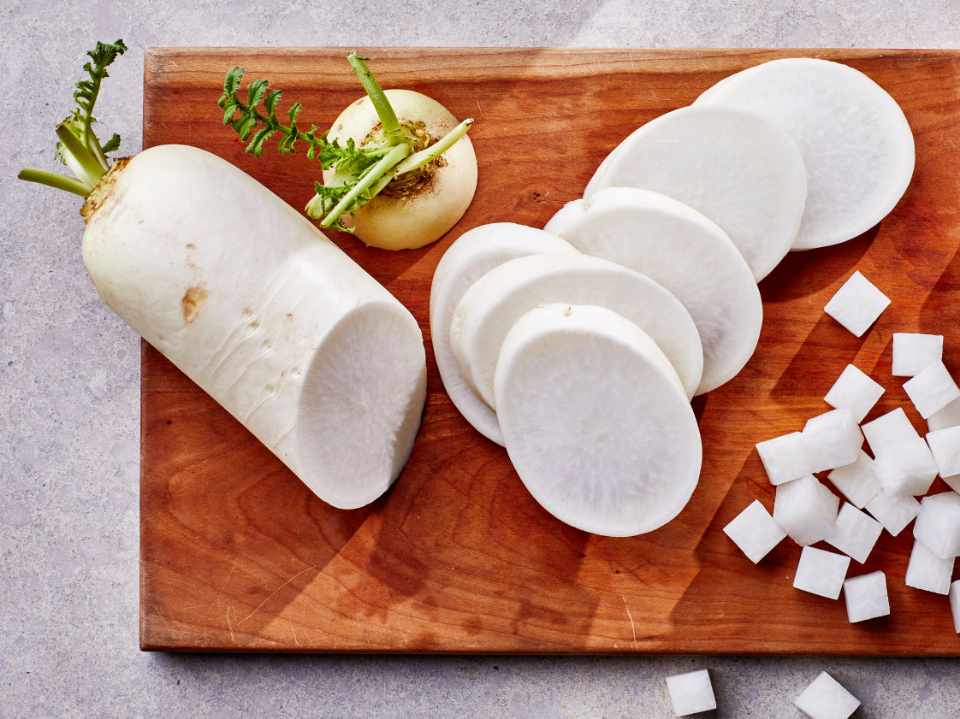

Pork sinigang is a popular Filipino sour soup dish that offers several nutrional benefitys due to its ingredients.Here are some of the key benefits:
Though some may dislike okra's texture,it offers impressive health benefits.It is high in vitamin C,which supports the immune system,and contains antioxidants that help protect the heart.Additionally,it is a good source of protein,promoting muscle and bone health.
Daikon radish is a fiber-rich vegetable that aids digestion and is also an excellent source of potassium and vitamin C.It contains phynutrients that help fight cancer and has diuretic properties that assist in removing toxins from the body.
Eggplant is packed with fiber,potssium,and antioxidants such as vitamins A and C,which help ptotect cells.It contains polyphenols,which may assist in managing blood sugar levels,making it a benefecial ingredient for people with diabetes.
To keep leftovers fresh,allow the sinigang to cool completely before transferring it to an airtight container.Store it in the refrigerator for up to two days.
Sinigang na baboy is a delicious,nutritious,and easy-to-make dish that brings warmth and comfort to any meal.Whether freshly cooked or heated the next day,its signature tangy broth and tender pork make it a favorite amomg Filipinos.Try it today and enjoy a bowl of this classic Filipino comfort food!